-
✅프로필
이름 : 김석진
생일 : 2001년 2월 26일
취미: 운동(헬스, 서핑, 클라이밍,,) -
✅소개 더보기 👇
안녕하세요, 저는 건국대학교 컴퓨터공학부 21학번 김석진입니다!저는, 2021년에 입학하였지만 같은 해 3월 군대에 입대하여, 2022년에 전역을 하고
2023년부터 1학년 1학기 첫 학교생활을 하게 되었습니다.
좋은 기회를 얻어 1학년때 학생회 부원을 하며 과대표를 맡았고,
현재는 2학년 과대표를 하며 부지런히 학교생활 하고 있습니다! -
✅취미 소개!
제 취미는 운동! 입니다.평상시엔 헬스장을 다니곤 하지만, 그 외에도
클라이밍장에 가서 암벽을 타기도 하고,
10월엔 항상 동해바다로 서핑을 하러 갑니다!
저의 다양한 취미 소개를 설명을 펼쳐서 확인해보세요!
-
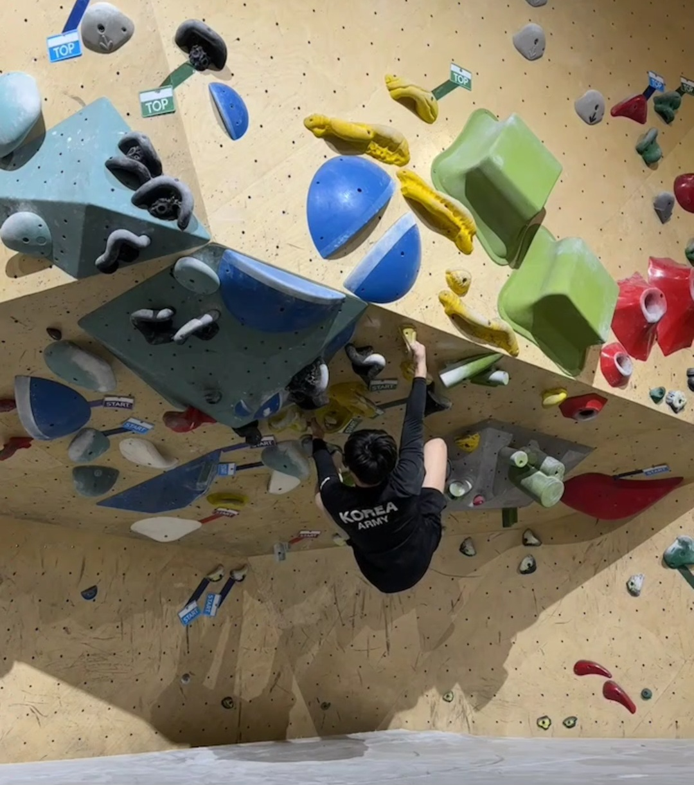
✅클라이밍 설명 👇
클라이밍 경력은 약 2년 정도이고,
친구따라 처음 해본 뒤 정식 입문 하게 되었습니다!
머리와 몸을 동시에 써야해서, 등반에 성공했을 때의
뿌듯함이 크고, 이것이 클라이밍의 가장 큰 매력입니다!
주로 "더클라임" 이라는 체인점을 애용하고,
학교 근처 성수역에서 "클라이밍 파크"라는 곳도 종종 갑니다! -
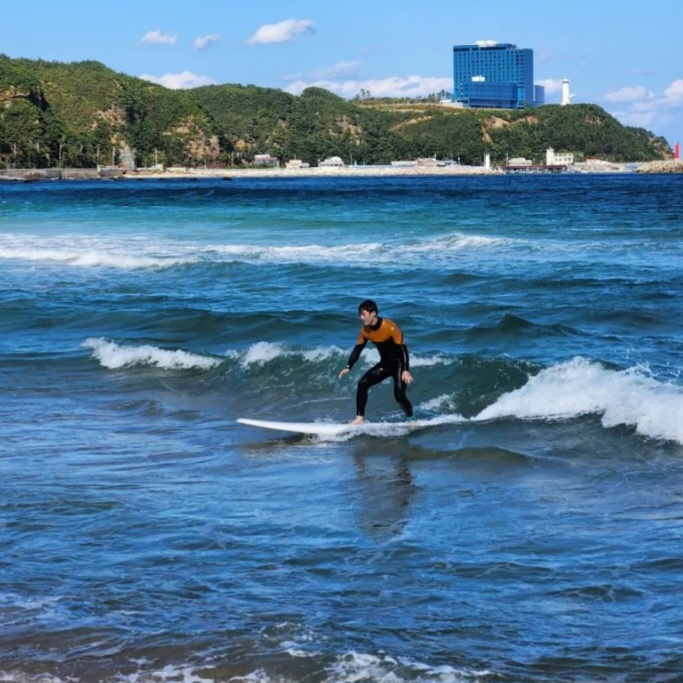
✅서핑 설명 👇
서핑 경력은 2년이고, 매년 10월 중순에 2학기 중간고사가 끝나면 강원도로 떠나 1박 2일간 원없이 서핑을 하고 옵니다! 서핑도 처음엔 굉장히 어렵고, 가을 동해 바다 속에서 파도를 뚫고 들어가 원하는 파도를 기다리다 파도를 잡고 라이딩을 합니다. 파도잡는게 9 라이딩이 1이지만, 성공했을 때의 성취감, 뿌듯함에 매료되어 저의 주된 취미로 굳어졌습니다!
-
나를 소개합니다!
-
내 짝을 소개합니다!
-
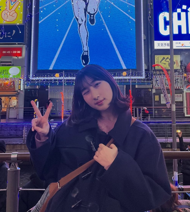
✅프로필
이름 : 김소희
생일 : 2004년 9월 17일
취미: 감성카페 가기✅짝궁 소개 더보기 👇
제 짝궁은 남양주에 살고있는 김소희 입니다!
제 짝궁은 게임하는 것을 좋아하며, 동기들과 같이 할 때 제일 좋아합니다!
저는 제 짝궁과 작년 초에 학과 행사로부터 처음 만났고, 같이 학생회 활동을 하며
친해지게 되었습니다. 우연히 나들이 같은조가 되어 같이 기뻐했습니다! -
짝궁의 20문 20답!
1. 이름 : 김소희2. 나이 : 21살 (한국나이)
3. 생일 : 2004년 9월 17일
4. 컴공을 선택한 이유
ㄴ 어렸을 때부터 컴퓨터 하는 것을 좋아했기 때문!5. 관심가는 분야 : 게임 개발
6. 좋아하는 연예인 : 정해인 / 이유 : 잘생겼다.
7. 좋아하는 음식 : 초밥
8. 요즘 빠진 음악 : Lover - Taylor Swift
이 노래의 앨범커버!
9. 인생영화 : 타이타닉
10. 취미생활 : 명상, 온라인 게임 - 롤, 독서
✅짝궁과의 심층 인터뷰! 👇
나 : 취미를 명상이라고 하셨는데, 정말 명상을 하시나요?
짝 : 아 사실 장난좀 쳐본거고요. 진짜 취미는 롤(온라인 게임) 좋아합니다.
나 : 보통 여자분들이 롤을 하는 걸 흔히 보진 못했는데
언제부터 했고, 특별한 계기가 있는지?짝 : 중2 때부터 주변 친구들이 시작하는 걸 보고 따라하게 되었다.
나 : 형제관계가 남들보다는 조금 더 특별한 걸로 아는데, 어떻게 되는지?짝 : 일단 나 포함 4남매이고, 언니는 나보다 2살 많고,
여동생은 6살차이, 남동생은 7살 차이다.
나 : 여태까지 들었던 수업중에 가장 힘든 수업과
추천하고 싶은 수업이 각각 어떻게되는지?짝 : 가장 힘든수업은..영어로 듣고있는데 내용도 어려운 객체지향 프로그래밍 수업이고,
가장 추천하는 수업은 웹프로그래밍이다!11. 공강시간 때 주로 하는거 : 과방에서 과제하기
12. 이성을 만날 때 가장 우선순위로 보는 것 : 재미있고, 잘 맞는지 여부를 본다.
13. MBTI : ENFP
14. 주로 보는 유튜브 : 짧은 대본
15. 인생의 좌우명 : 노력하지 않고 후회하지 말자
16. 가고 싶은 여행지 : 스위스
17. 올해의 버킷리스트 3가지 : 좋은 남자친구 만들기 / 학점 4.0 넘기기 / 동기랑 해외여행 가보기
18. 종강하면 방학 때 주로 하는것 : 공부하기, 술마시기
19. 2학년 1학기 다짐 : 꼭 수업 잘 듣고 4.0 을 넘자!
20. 좋아하는 운동 : 배드민턴
짝궁과의 사진!
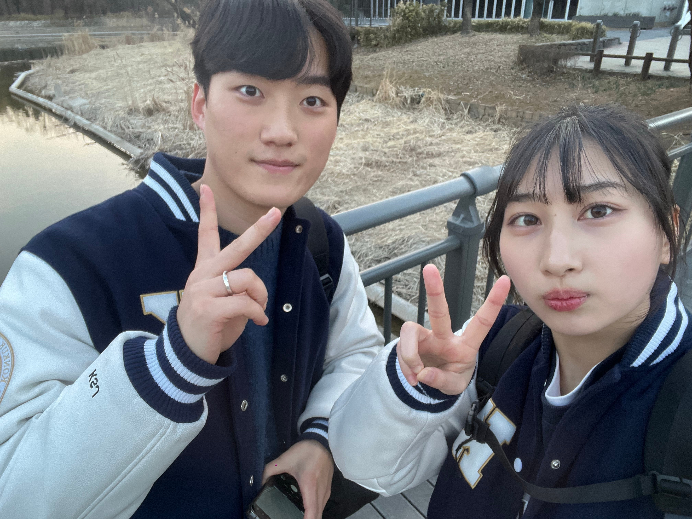 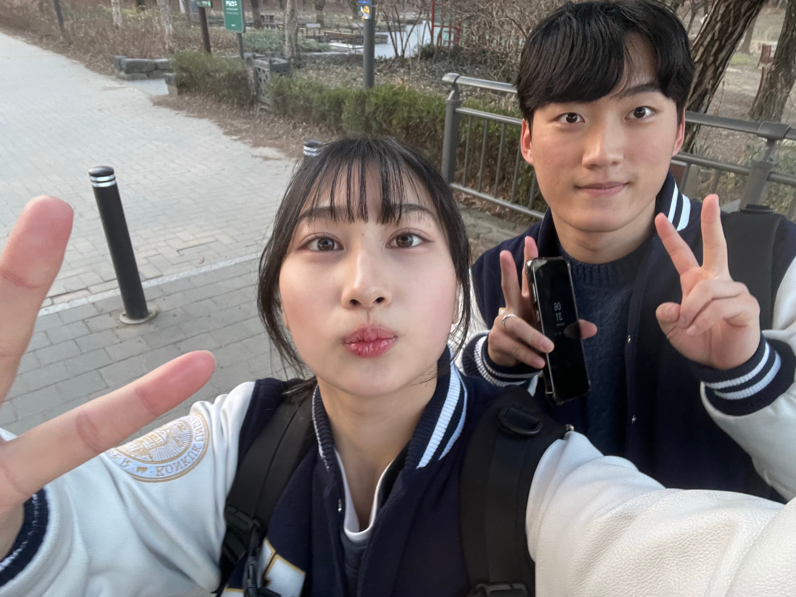인터뷰를 하며 찍은 사진 산책을 하며 찍은 사진
-
-
우리의 산책로는 [서울숲🌳]입니다.-
📍위치 : 서울 성동구 뚝섬로 273
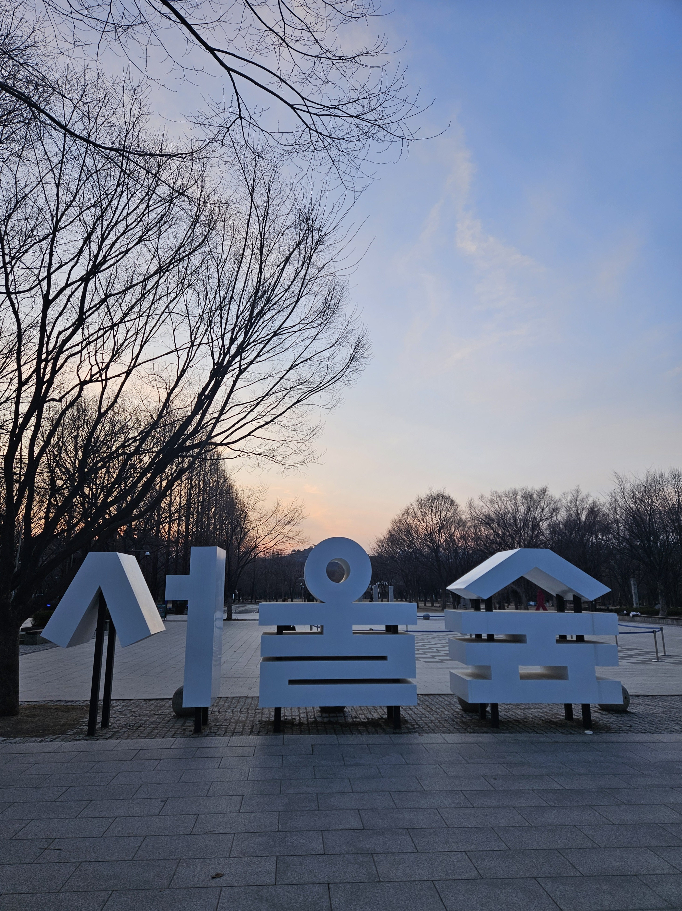
📃설명 : 서울특별시가 '뚝섬 숲 조성 기본계획'에 따라
기존의 뚝섬체육공원 일대를 대규모 도시 숲으로 만들기 위해
2004년 4월 6일부터 공사를 시작하였고 전체 면적은 15만 평이며,
2005년 6월에 문을 열었다고 합니다! -
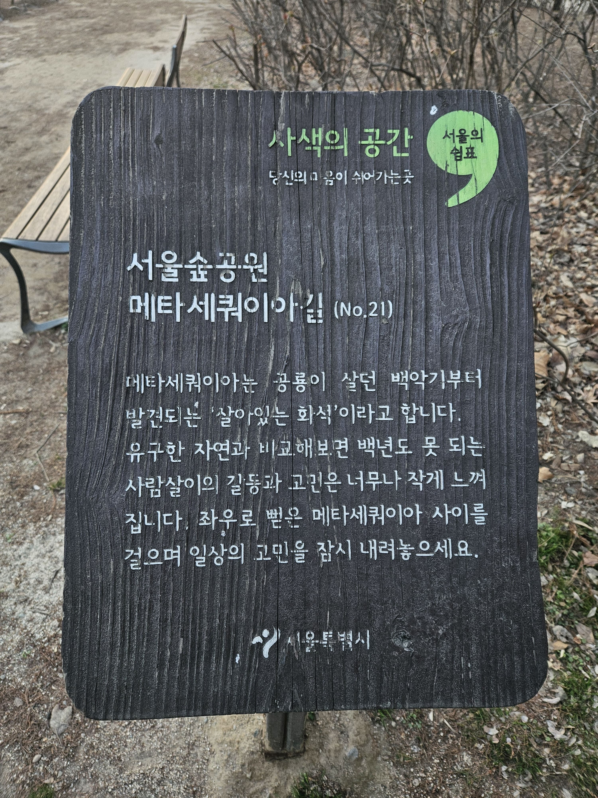
✅메타 세콰이어 길이란? 👇
메타세콰이어의 단어를 분석해 보면메타(Meta)는 그리스어와 라틴어의 접두어로 뒤(after)라는 뜻이고,
세콰이어(Sequoia)란 북미 서안 캘리포니아주 인근에 서식하는 세콰이어 나무를 가리킵니다.
제 경험상 여러 산책로의 메타 세콰이어 길을 가본 바, 자연친화적인 흙길을 밟으며
산책을 즐길 수 있는 길 정도로 이해하시면 편할 것 같습니다!.
서울숲에도 잘 조성되어 있어 직접한번 걸어 보았습니다!
-
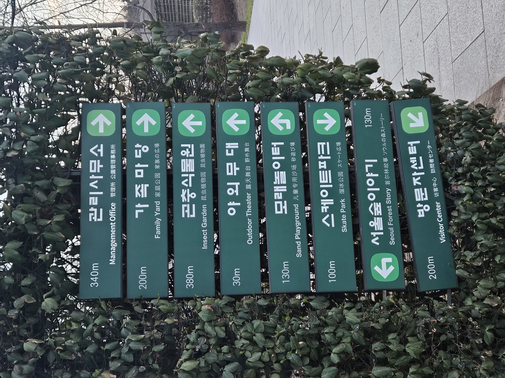
산책 코스
이정표를 참고하여, 어떤 것들이 있는지 둘러보세요
개인적으로 가족마당은 기대에 비해 별로였습니다.
저희가 갔을 때 아직 날이 안풀려 잔디 색도 없고,
꽃하나 없던 것이 아쉬운 점으로 작용한 것 같네요.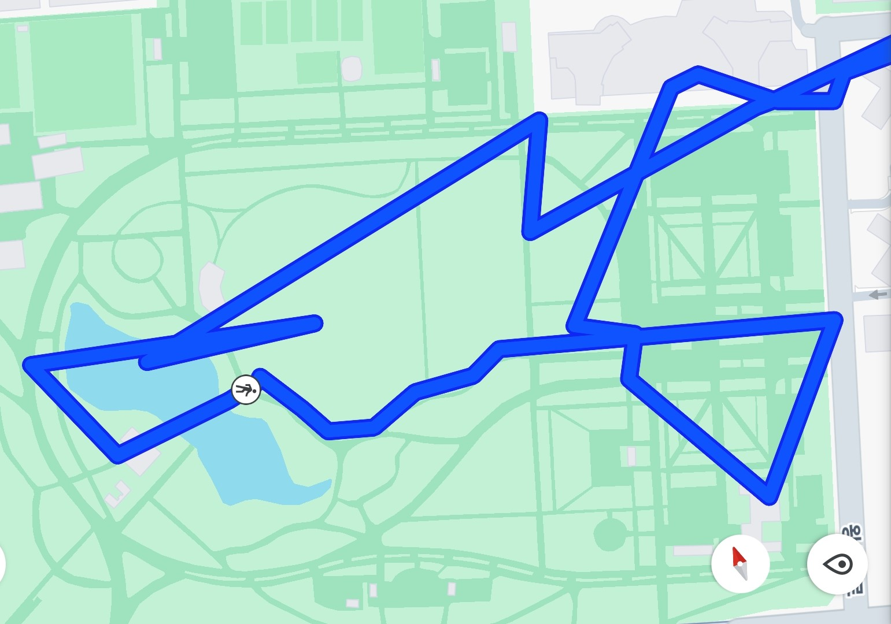저희가 걸은 산책 루트입니다!
-
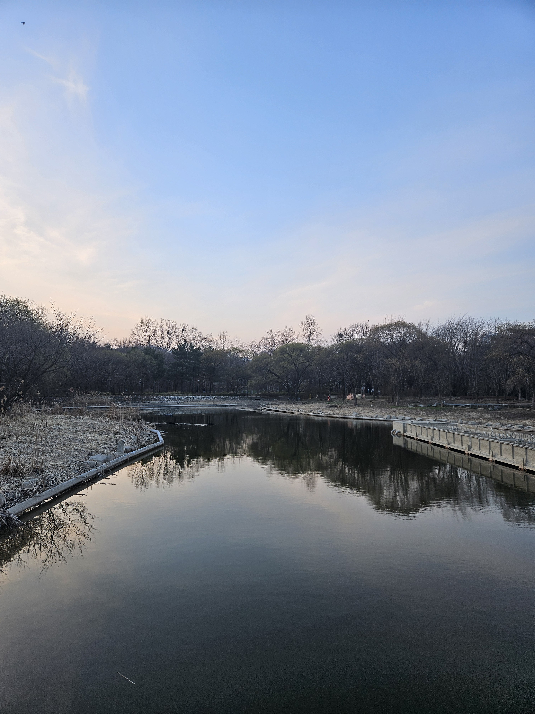
서울숲 호수!
가족마당 뒤쪽에 있던 서울숲의 호수입니다. 나들이를 갔을 당시가 3월 22일 이였는데,
아직은 봄 느낌은 아니였습니다. 잔디도 아직 색이 없고, 꽃이 핀것도 아니었지만,
하늘이 맑아 전체적인 풍경자체는 볼 만 했습니다. 그러나 건국대 학생이라면 서울숲의 호수도 예쁘지만
건국대학교의 자랑인 일감호가 훨씬 더 예뻐보이긴 할 것 같네요! 하지만 전체적인 공원의 느낌이 좋아
날이 풀리고 꽃이 피면, 다시 한번 방문해보고 싶은 산책로 였습니다!
-
-
가는길 안내! (2호선 뚝섬역 -> 서울숲)
-
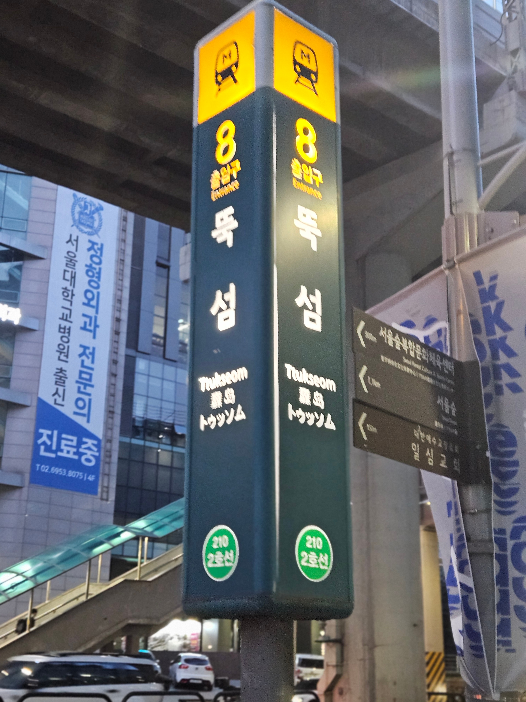
우선 서울 숲의 가기 위한 가장 중요한 팁! -> "뚝섬역 8번출구로 갈 것"
서울숲의 가기 위해서는 뚝섬역에 내리는 걸 추천합니다!
서울숲역-수인분당선을 들어보셨을텐데, 이곳으로 가는 것은 추천하지 않습니다.
처음부터 수인분당선을 타고 가는게 아니라면, 굳이 이 노선을 타기보단,
많은 분들이 이용하시는 2호선을 이용하여 뚝섬역에 내리는 것을 추천합니다.
-
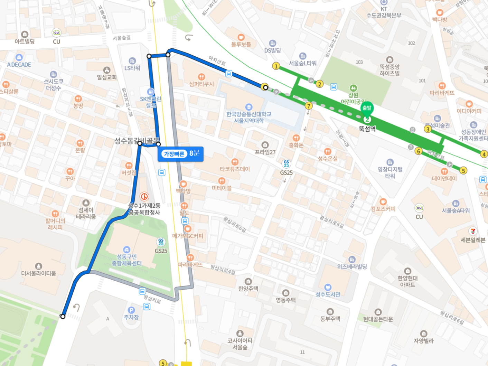
왼쪽을 보면, 뚝섬역 -> 서울숲 까지의 도보로 가는길을 확인할 수 있습니다!
도보 9분 거리이니, 충분히 편하게 걸어가실 수 있습니다!
추가적으로 서울숲 가는길 유독 특이하게 생긴 빌딩이있는데
SM엔터테인먼트 건물이니 한번 찾아보세요! -
그렇게 걷다가 마주하는 풍경은 옆에 보이는 서울숲 간판입니다!
여기서부턴, 앞에 있는 안내도를 보고 원하는 코스대로 산책하시면 됩니다!
가능하면 가족마당을 가장 먼저 마주하게 되는 코스대로 가는걸 추천합니다!
-